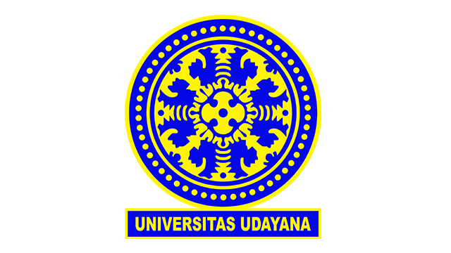

UNIVERSITAS UDAYANA
Informasi Universitas

Jalur Masuk
- SNBP (Seleksi Nasional Berdasarkan Prestasi): Jalur undangan bagi siswa berprestasi.
- SNBT (Seleksi Nasional Berdasarkan Tes): Jalur seleksi berdasarkan ujian nasional.
- Jalur Mandiri: Seleksi mandiri melalui UTBK Mandiri dan ujian tulis berbasis komputer. Info lebih lanjut: https://pmb.unud.ac.id/jadwal-seleksi/
Fakultas dan Program Studi
Fakultas Ekonomi dan Bisnis
- Akuntansi (A), Manajemen (A), Ekonomi Pembangunan (Unggul)
- D3: Akuntansi (A), Perpajakan (A), Perpustakaan (B)
- Magister: Manajemen (A), Akuntansi (A)
Fakultas Hukum
- Ilmu Hukum (A)
Fakultas Ilmu Sosial dan Ilmu Politik
- Ilmu Komunikasi, Ilmu Politik, Sosiologi, Administrasi Publik, Hubungan Internasional, D3 Perpustakaan (semua B)

Fakultas Teknik
Fakultas Kedokteran
Fakultas Lainnya